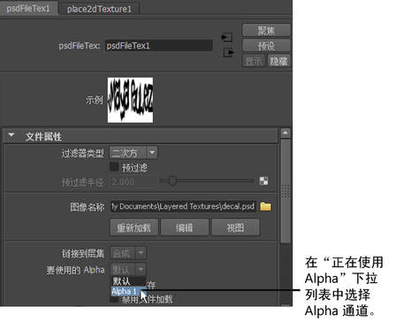

在场景视图中显示 PSD 文件的 Alpha
如果 PSD 文件包含 Alpha 通道，必须遵循以下步骤以在 Maya 中显示 Alpha（例如，场景视图、交互式渲染器和渲染）。
在 PSD 文件节点中，默认情况下属性
“要使用的 Alpha”(Alpha In Use)
设定为
“默认”(Default)
。默认情况下，这将忽略 Alpha 通道。
作为替代，选择
“要使用的 Alpha”(Alpha In Use)
下拉列表中的 Alpha 通道。现在，应该能够在场景视图中查看 Alpha。

父主题：
将 PSD 网络用作 Maya 中的纹理